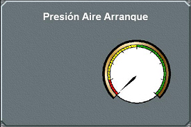

Presión de Aire de Arranque
El indicador de Presión de Aire de Arranque muestra la Presión del Aire de Arranque del motor de la unidad controlada.

Contiene los siguientes elementos:
- Indicador de Presión de Aire de Arranque de los motores: indicador analógico con tres zonas diferenciadas, roja, amarilla y verde, de forma que la presión mínima de arranque coincide con el límite entre la zona roja y la amarilla.